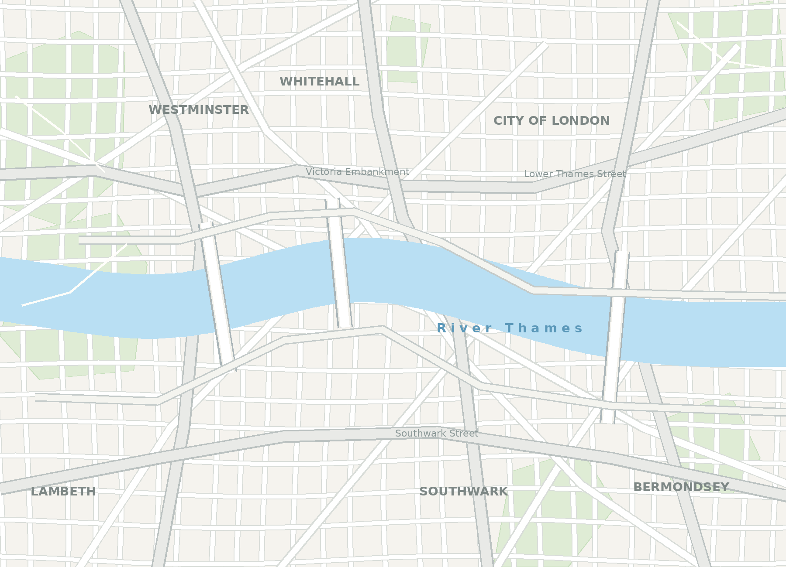
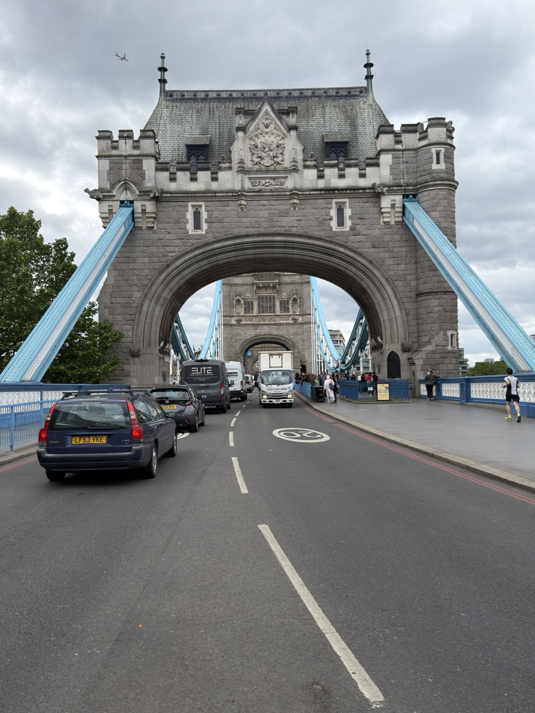

🚲
EAST LONDON
Tower Bridge
Exploring Tower Bridge beside the Thames.

1 / 3
LONDON ON TWO WHEELS
Click a checkpoint to move the bicycle and explore my photographs.

EAST LONDON
Exploring Tower Bridge beside the Thames.
